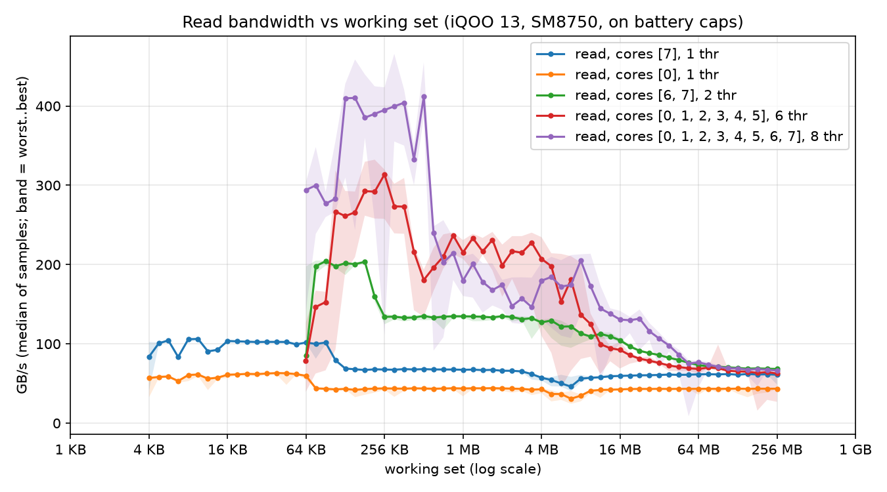
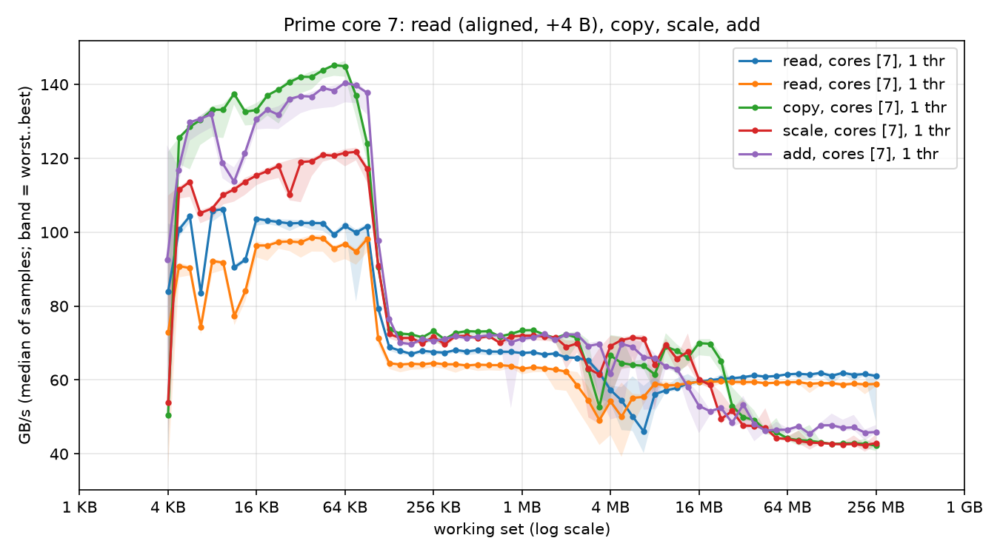

Phase 1 · 13
What Phase 1 measured
Before this page, the Phase 1 pages were written before anything was measured. This is the answer sheet: the yardstick table from results/phase-1.md, the two sweeps as plots, and what each number means for the engine. Every later kernel is compared against these numbers.
What were the conditions for these numbers?
A speed holds only under the conditions that produced it. This phone was on battery, and that changes its clocks.
All runs were on 2026-10-21, on battery (adb over Wi-Fi, so no USB power), with the screen kept on and battery saver off. Each run started with the hottest CPU zone below 44–48 °C measured.
On battery, the vendor caps the clocks well below their maximum. Under load, the prime cores (max 4.32 GHz) ran at 2.44 GHz and the performance cores (max 3.53 GHz) at 2.40 GHz. Keep the screen on. With it off, the caps fall further, to 1.02 and 1.79 GHz, and the run measures a slower phone. So every number here is an on-battery number. Plugged in, or in a performance mode, they would be different, and that has not been measured.
Two smaller facts came from the same runs. The CPU reports a 64-byte cache line through the CTR_EL0 register, a hardware register that describes the cache. A cache line is the block the cache moves at once, so 64-byte alignment is the right choice. And there are no efficiency cores, so “prime vs efficiency” in the plan became prime vs performance.
Programs: examples/bw_sweep.rs and examples/bw_sustained.rs, run by scripts/phase1-runs.sh. Every CSV in results/phase-1/raw/ starts with the conditions it ran under.
Takeaway: every number here is an on-battery number with the screen on, so a plugged-in run needs its own measurement.
What are the headline numbers?
Later kernels need one yardstick. GB/s here are decimal, so 61 GB/s means 61 billion bytes per second. Bytes are counted the STREAM way, a counting rule that counts each element read or written once. So a copy counts its read and its write (why that matters). “Read” is a sum with 8 independent NEON accumulators. NEON is the phone’s vector instruction set, and an accumulator is a running total. Because of the accumulators, the read is limited by memory, not by a dependency chain. All values measured.
Compare a kernel with the DRAM rows. Judged against the L1 row, it expects about 102 GB/s, and the bus cannot give that to a kernel that reads from DRAM.
| What | Prime core | Performance core |
|---|---|---|
| L1 read (up to ~90 KB) | ~102 GB/s | ~61 GB/s |
| L2 read (128 KB – about 2–3 MB) | ~67 GB/s | ~44 GB/s |
| DRAM read (64 MB and up) | ~61 GB/s | ~43 GB/s |
| DRAM read, 5 minutes, one core | 47.5 GB/s average | 32.3 GB/s average |
| Energy per GB read, 5 minutes | 0.066 J/GB | 0.082 J/GB |
| Several cores at once | DRAM read |
|---|---|
| 2 prime cores | ~68 GB/s |
| 6 performance cores | ~63 GB/s |
| all 8 cores | ~67 GB/s (69.8 at the start of the sustained run) |
| all 8 cores, 5 minutes | 70.2 GB/s in the first 30 s → 68.4 in the last 30 s |
| all 8 cores, L1-sized pieces (64 KB per thread) | ~400 GB/s together |
Takeaway: a prime core reads about 61 GB/s from DRAM, and all eight cores together about 67 GB/s.
How does bandwidth change with buffer size?
A kernel reads from a buffer, a block of memory the program reads again and again. The buffer’s size decides which level of memory serves those reads. This is the plot Bandwidth told you to look for: one buffer per run, read again and again, growing from 4 KB to 256 MB, four sizes per doubling. For the multi-core lines the buffer is split between the threads, so the x axis is the total size.

For one prime core, the plot has three levels. L1 and L2 are caches, small fast memories close to the core. DRAM is the main memory, far away on the bus.
L1 cache buffer up to ~90 KB ~102 GB/s fastest, closest
L2 cache 128 KB to 2–3 MB ~67 GB/s
DRAM 64 MB and up ~61 GB/s the bus is the limitHow to read the blue line (one prime core) from left to right:
- Up to about 90 KB: ~102 GB/s. The whole buffer fits in L1. The cliff sits just below 96 KB, Oryon’s L1 data cache size. The first steady plateau is the cache size you can see without any documentation.
- 128 KB to about 2–3 MB: ~67 GB/s. L2. Its edge is less clean to read off, likely because the L2 is shared by a cluster of cores (12 MB per cluster, according to launch coverage assumption).
- 4 to 8 MB: a dip to 46–57 GB/s, slower than DRAM itself. Not explained yet (see still open).
- 64 MB and up: ~61 GB/s. DRAM. Every line converges here: the bus, not the cores, is the limit.
The orange line (one performance core) has the same shape, lower everywhere: about 0.6× the prime core in L1 and 0.7× from DRAM, at nearly the same clock cap (2.40 vs 2.44 GHz). The same cores, the same caps, but a large difference. Phase 2 hit the same puzzle with the scalar model.
The multi-core lines start at 64 KB, so their L1 region is where each thread’s piece fits its own L1: eight L1 caches together give about 400 GB/s. That is the speed of data a kernel already has close by, and the reason GEMM works hard to reuse it. Read a buffer that fits in L1 as if it were DRAM and you report about 102 GB/s for a kernel that will really run at about 61.
Takeaway: speed steps down each time the buffer outgrows a cache level, and flattens at DRAM.
Does one core nearly fill the bus?
Decode reads the weights for every token, so the question is how many cores it takes to read them fast enough. The plan expected one core to fall well short, so decode would need several threads. On this phone that is true only for a performance core: 43 of ~67 GB/s, about 64 %. One prime core gets 61 of ~67, about 90 % calculated.
So decode on one prime core is close to the memory limit already, if the kernel keeps up. Phase 2’s scalar loop read only 5.4 GB/s, and Phase 3’s NEON GEMV reached 40.6 GB/s on a 256 MB matrix that must come from DRAM (about 29–49 GB/s on smaller matrices of 17–37 MB). The yardstick says how much is left: about 61. A kernel that reads at 5.4 GB/s leaves most of the bus unused.
For stories15M in f32, 60.8 MB per token and 61 GB/s give a ceiling of about 1,000 tokens per second on one prime core calculated. In numbers: 61,000 MB per second ÷ 60.8 MB per token ≈ 1,000 tokens per second. Phase 3 reached 422.
Takeaway: one prime core is already close to the memory limit, so the kernel’s own efficiency decides how much of it you use.
What do writes and misalignment cost?
Real kernels write their results as well as read their inputs. A write is not free. Before the cache can change a line, it must fetch that line. Follow one element of a copy, which reads one value and writes one:
copy, per element, as the STREAM count sees it: read 1 + write 1 = 2 units
copy, what the bus carries: read 1 + line fetch 1 + write 1 = 3 units
3 ÷ 2 = 1.5×
- In L1, copy and add beat read (up to ~145 GB/s counted). They move a read and a write per element, and a core can usually run loads and stores side by side assumption, so in cache the two add up.
- From DRAM they lose: 42 / 43 / 46 GB/s for copy / scale / add. The line fetch is the hidden cost (write-allocate). The real traffic is 1.5× the counted bytes for copy and scale, 1.33× for add. 42 × 1.5 ≈ 63 GB/s, the same as the read limit calculated.
- From DRAM, scale tracks copy (43 vs 42 GB/s): one multiply per element costs nothing when the stream is the limit. In L1 it does show: scale peaks near 120 GB/s, copy near 145.
- Misalignment costs 3–5 %: 97 vs 102 GB/s in L1, 59 vs 61 from DRAM. Misaligned data starts 4 bytes past a 64-byte boundary (the orange line in the figure). The cost is measurable and small.
AlignedBuf(src/aligned.rs) is kept mostly so every benchmark starts from the same layout.
Takeaway: a write from DRAM also fetches its line first, so copy’s 42 GB/s counted is about 63 GB/s on the bus.
Does bandwidth hold up after five minutes?
A fresh number and a sustained number answer different questions (Power and heat). A chat can run for minutes, and the phone heats up as it works. So the test ran for 5 minutes:
- All 8 cores lost only 2.6 % (70.2 → 68.4 GB/s), although the phone reached 88 °C and the governor cut the clocks from 2.40 / 2.44 GHz to 1.36 / 1.02 GHz. Eight cores at a low clock still keep enough loads in flight to fill the bus. A memory-bound job does not need full clocks.
- One prime core lost about 22 % (61 fresh → 47.5 average). A single core needs its clock to issue loads fast enough.
For decode, a single-thread speed measured on a cool phone is optimistic for a long chat, and several threads hold their speed better. Quote the cool number as the speed and a long chat runs slower than the figure promised.
Takeaway: eight cores held their speed over five minutes and one prime core did not, so a cool single-thread number overstates a long chat.
How much energy does a gigabyte cost?
Speed is only half the story, because the phone runs on a battery. The plan’s method reads current_now from /sys/class/power_supply, but SELinux (Android’s access-control system) denies those files to the shell user. Android’s battery service is readable instead, but it refreshes only every 45–85 seconds. So energy was measured from the battery’s charge counter, the running total of charge the battery has given out. The method takes the charge used between its first and last step inside each 5-minute run, times the battery voltage, minus a 5-minute idle baseline (what the phone draws doing nothing) measured just before.
| Total | Above idle | |
|---|---|---|
| prime core, one thread | 0.066 J/GB | 0.055 J/GB |
| performance core, one thread | 0.082 J/GB | 0.060 J/GB |
| all 8 cores (4.57 W) | 0.066 J/GB | — |
The prime core moved 47 % more bytes per second at 18 % more power, so each gigabyte cost it less in total. Above idle, the two are within this method’s resolution. The total is the one that matters for a phone. The screen, radio and the rest draw power the whole time the job runs, so finishing sooner (“race to idle”, meaning finish fast, then let the phone rest) wins for memory-bound work.
One step of the charge counter is about 1 mAh (a unit of charge), roughly 14 J at about 4 V assumption. That is about 1.5–2 % of a 5-minute prime-core run (791–938 J) calculated. The idle baseline itself varied from 0.53 to 0.70 W between runs. Treat differences under about 10 % as noise. The 0.082 vs 0.066 total is a real difference; 0.060 vs 0.055 above idle is not.
Takeaway: for memory-bound work, finishing sooner saves energy, because the screen and radio draw power for the whole run.
What is still unexplained?
Four questions are still open. Each one is a job for later work.
- The 4–8 MB dip. One core reads slower from a 4–8 MB buffer than from DRAM (46–57 vs 61 GB/s). Candidates: the 12 MB L2 being shared by the cluster, the system-level cache, prefetcher behaviour. A simpleperf question.
- Why the performance core is so much slower at nearly the same clock cap. The real clock under load may be lower than the cap.
- Plugged-in numbers. Everything here is on battery caps. Until they are measured, do not mix them with the on-battery numbers.
- The compute roof. Phase 1 measured the memory roof of the roofline; the peak FMA rate has not been measured.
Takeaway: the 4–8 MB dip, the slow performance core, the plugged-in numbers and the compute roof are still open.
Check yourself
Why does the read sweep have flat steps instead of a smooth slope?
Each step is one level of memory. While the whole buffer fits in a level, every read comes from it at that level’s speed. Past its size, reads spill to the next, slower level, and the speed drops to the next step.
Copy reports 42 GB/s from DRAM and read reports 61. Is the bus slower for copies?
No. Copy’s count leaves out the reads that write-allocate adds. Its real traffic is about 1.5 × 42 ≈ 63 GB/s, the same limit.
All-core bandwidth fell 2.6 % in 5 minutes, one prime core fell 22 %. Why the difference?
Eight cores have far more loads in flight than the bus needs, so even at a low clock they keep it full. One core is just barely enough at full clock; when the governor lowers its clock, it issues loads more slowly and the bandwidth falls with it.
What is the decode ceiling for stories15M (60.8 MB per token) on one prime core?
About 61 GB/s ÷ 60.8 MB ≈ 1,000 tokens per second, if the kernel kept up with memory. It is a ceiling, not a prediction.
What you should take away
Every number depends on its conditions, so record the battery, the screen and the temperature with it.
Writes cost more than reads, because the cache fetches each line before changing it.
Energy per gigabyte favours finishing fast, since the rest of the phone draws power the whole time.